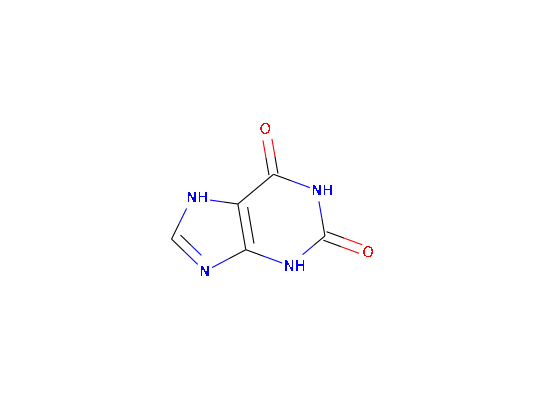

"plot"(x, ...)
grid.picturePlot method for chent objects
caffeine <- chent$new("caffeine", source = "pubchem")http://eutils.ncbi.nlm.nih.gov/entrez/eutils/esearch.fcgi?retmax=100000&db=pccompound&term=caffeine Found 217 entries in PubChem, using the first one. http://eutils.ncbi.nlm.nih.gov/entrez/eutils/esummary.fcgi?retmax=100000&db=pccompound&ID=1188print(caffeine)<chent> Identifier $identifier caffeine InChI Key $inchikey LRFVTYWOQMYALW-UHFFFAOYSA-N SMILES string $smiles C1=NC2=C(N1)C(=O)NC(=O)N2 Molecular weight $mw: 152.1 PubChem synonyms (first 10): [1] "xanthine" "2,6-Dihydroxypurine" "69-89-6" "Xanthin" "2,6-dioxopurine" [6] "Pseudoxanthine" "Isoxanthine" "Xanthic oxide" "1H-Purine-2,6-diol" "Purine-2,6-diol"caffeine$get_rdkit() plot(caffeine)